boymaas.nl atelier, round five: the playground floating in space
Variant 12's toy is kept whole: nine simulations the cursor breaks and that heal, chained at random. The page has gone dark and a full-bleed background canvas carries a starfield and an esoteric effect, with its own states that change over minutes the way the toy changes over seconds. Under the same seed the toy's run is identical across all three, so the filmstrips differ only in the world. Open a live page, leave it alone for a minute, then play.
Earlier rounds: 12 the chosen toy on paper 10 11 7 8 9 4 5 6
13. Warp · seed 7
Deep indigo navy. A classic 3D starfield flies towards a vanishing point where the flower of life turns in one-pixel lines and never gets closer. Now and then a hyperspace burst. The layers talk: a broken toy slows the ship, a healed toy flashes the flower, a burst jolts the toy. Secrets: play for the toy sandbox, warp for the helm where z x c v b n pick a sky state.
sky states: cruise · dense · burst · roll · veer · passer
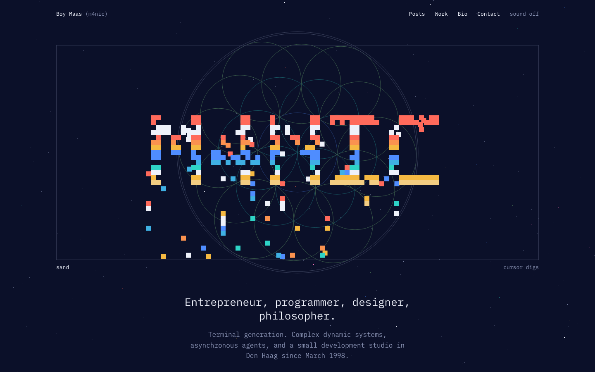
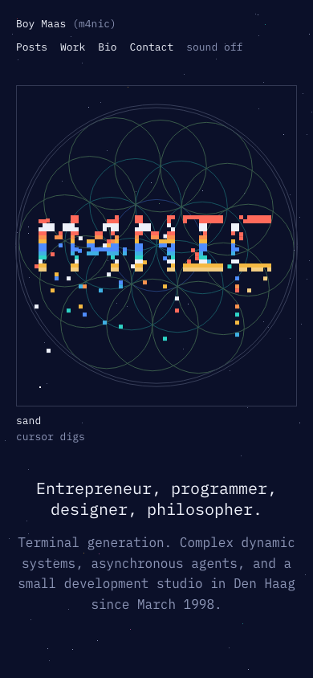
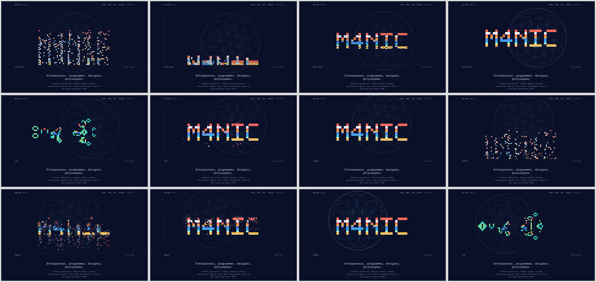
full page
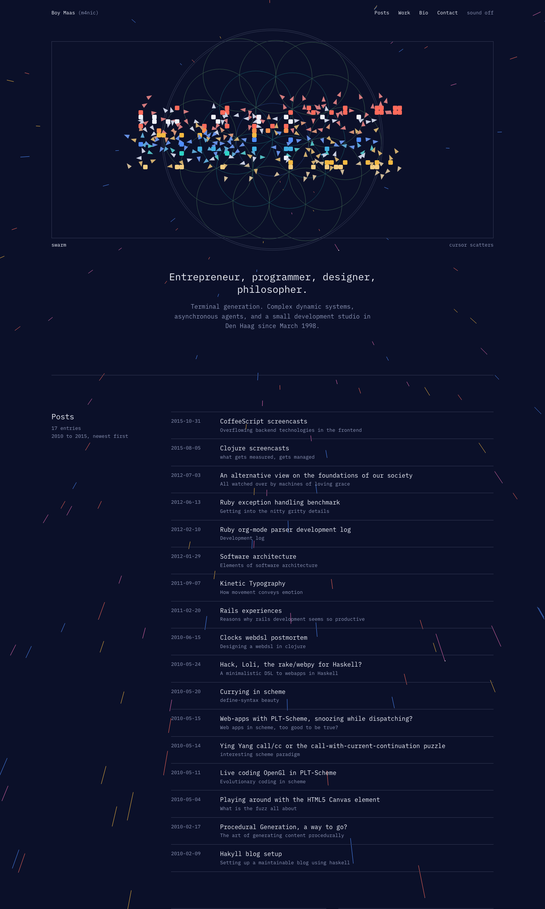
14. Nebula · seed 7
Deep indigo. Three parallax star planes drift down-left; behind them Bayer-dithered nebulae in violet, cobalt, teal, magenta and amber, palette-cycled so they breathe. A tilted astrolabe turns once per six minutes around the destination. Constellations on the mid plane are alchemical glyphs joined by hairlines that form and dissolve. We drift towards a brighter shore we never reach.
sky states: drift · breath · rete · sigils · shore · passing
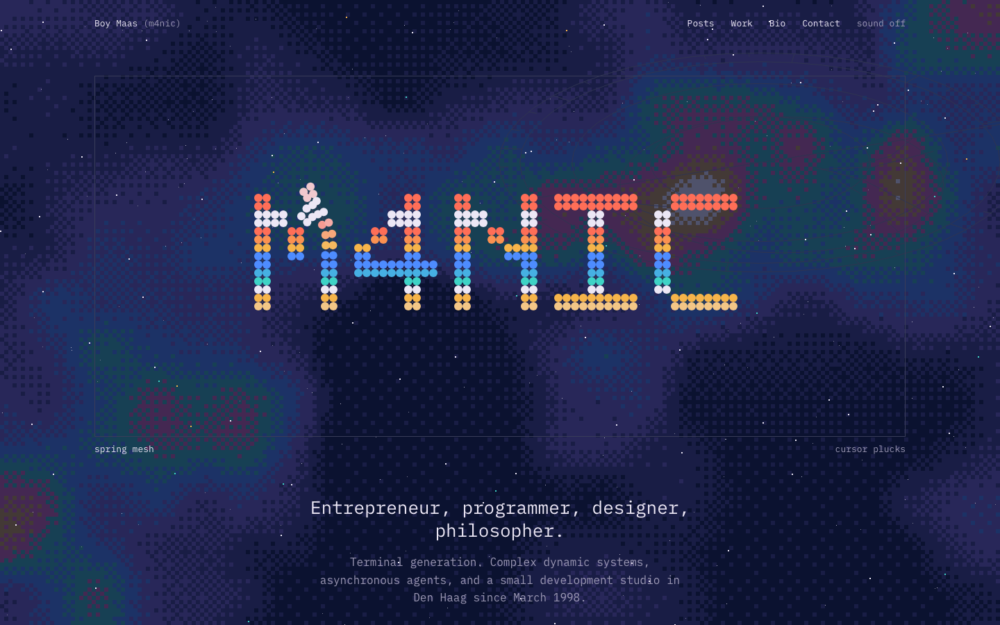
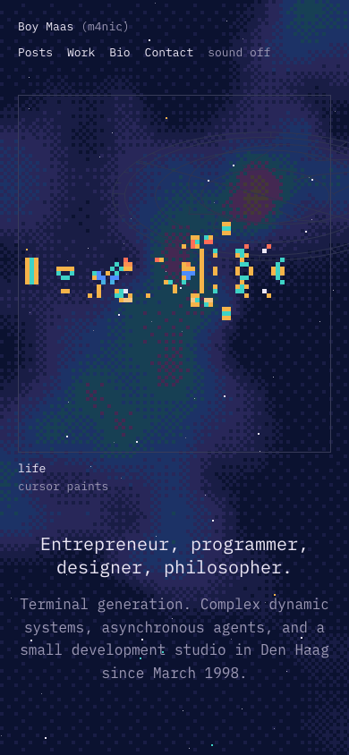
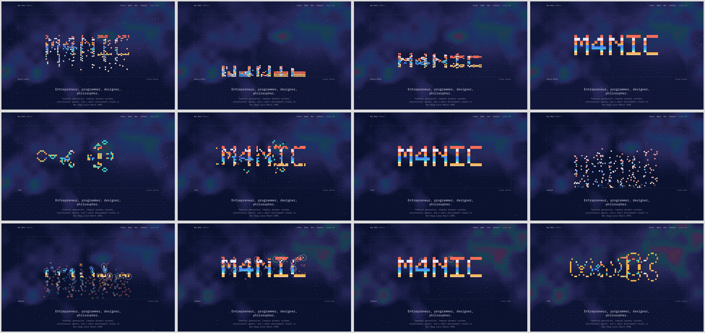
full page
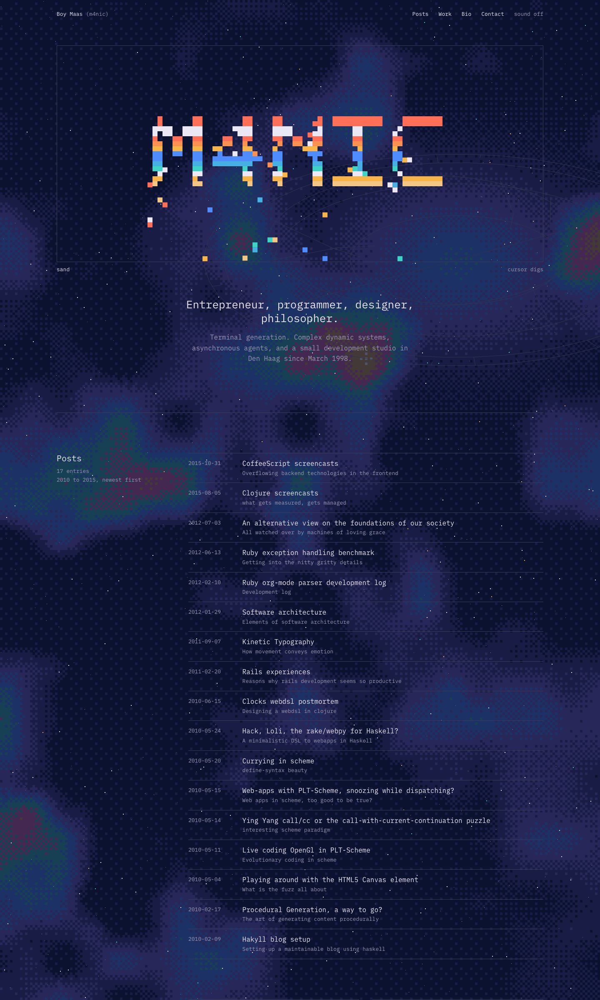
15. Wormhole · seed 7
Abyss blue. The classic tunnel effect computed per pixel at low resolution and scaled up chunky: walls flow outward as we travel, stars fall the other way into the hole. Deep inside, a seven-ring hermetic sigil (hexagram, heptagram, zodiac ticks, octagram) turns and is revealed one ring per 26 seconds. "AS ABOVE" reads on the upper wall, "SO BELOW" as its reflection below. Each new system sends a dithered pulse ring down the tunnel. Secret: above opens all seven rings.
sky states: drift · bend · weave · as above · plunge
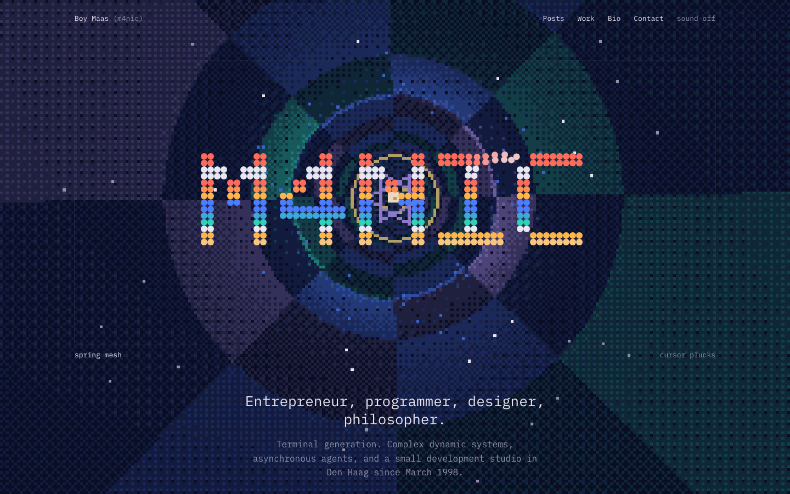
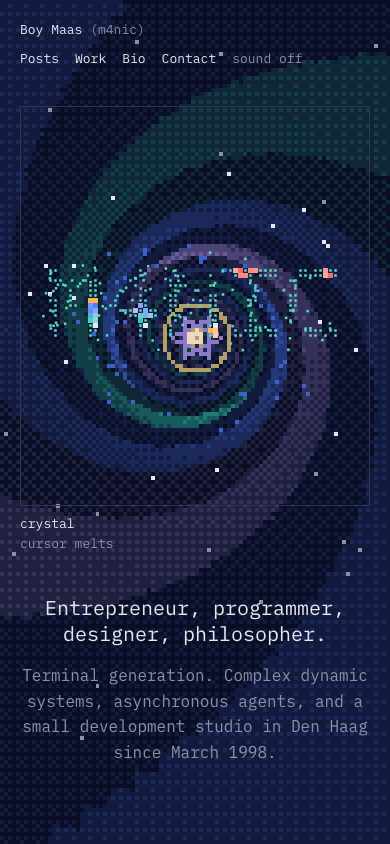
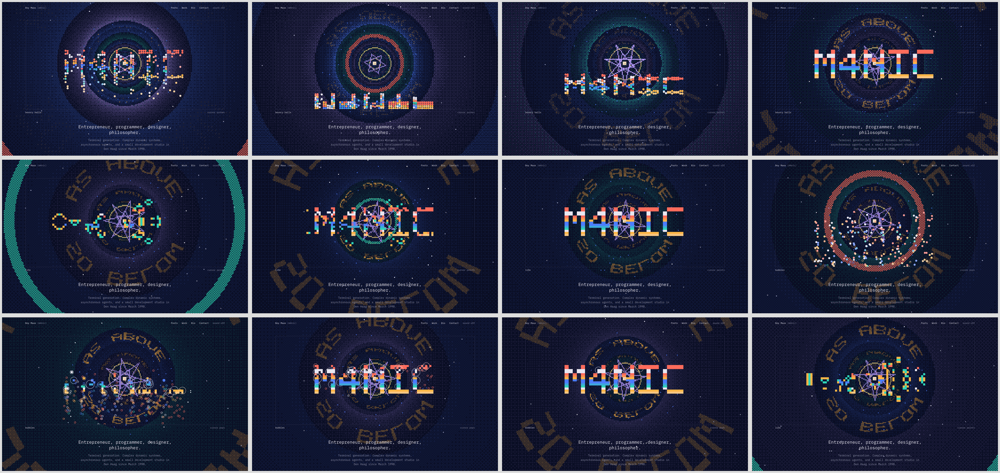
full page
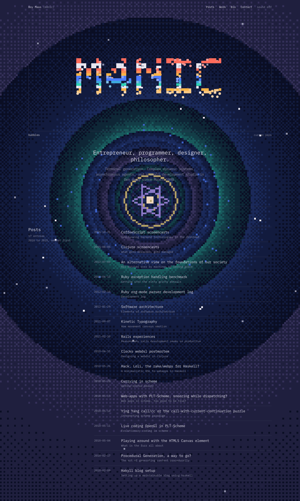